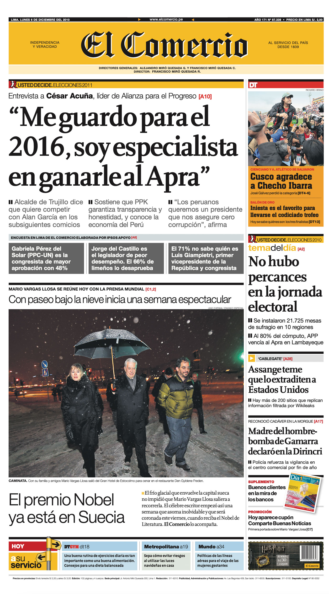

Enrique Planas
Editor de El Dominical
-
Lo que significa un Nobel
-
La semana de Nobel
-
El discurso
-
La premiación

Lo que significa un Nobel
El 7 de octubre de 2010, la buena nueva que todo periodista esperaba por años publicar despertó muy temprano a todos los peruanos: el escritor Mario Vargas Llosa había recibido la llamada de la Academia Sueca informándole que había sido elegido para recibir el premio de la Fundación Nobel. Una sorpresa nacional, pues durante años nos habíamos convencido de que el autor de “La Casa Verde” no conseguiría jamás el voto unánime de la Academia Sueca.
La noticia fue difundida por Robert Englund, a las 11 de la mañana, hora sueca. Es una responsabilidad que el Secretario de la Academia cumple con rigurosa seriedad cada año, enfrentando siempre a un pelotón de reporteros. Informó el veredicto en varios idiomas y finalizó en castellano. Las razones de la Academia caben en dos líneas para definir el valor de la obra de MVLL: "Por su cartografía de las estructuras del poder y sus mordaces imágenes de la resistencia individual, la revuelta y la derrota".
La diferencia horaria con respecto a Suecia le dio a la prensa peruana un amplio margen de maniobra para preparar su edición. Un trabajo que empezaba casi de cero, pues si bien era habitual dejar lista una serie de contactos de comentaristas antes del anuncio del Nobel, previendo el caso de que Vargas Llosa resultara ganador, ese año, debido a tantas desilusiones, habíamos dejado de lado toda planificación. Suponíamos, como había sucedido en las ediciones más recientes del premio, que un autor de Europa oriental, casi desconocido para lectores locales, sería elegido ganador.
“El Perú soy yo aunque a algunos no les guste [...] lo que yo escribo es el Perú también”.
Mario Vargas Llosa
Ese prejuicio queda bien reflejado en el artículo publicado por el diario madrileño “El Mundo” el 5 de octubre, tan solo dos días antes del anuncio de la Academia Sueca. Titulado “¿Un nobel español? Pfff...”, el periodista Luis Alemany especulaba qué tan reales eran los opciones de triunfo para los autores iberoamericanos. Y al enfocarse en América Latina, advierte: “Hay dos nombres clásicos: Vargas Llosa, por su valor literario. Y Carlos Fuentes, por otras razones. Lo malo es que lo del Nobel de Vargas Llosa lleva tanto tiempo encima de la mesa que parece un asunto enquistado, antipático. Igual que el caso de Borges”.
Por lo visto, todos nos equivocamos.
A Mario Vargas Llosa la noticia le sorprendió muy temprano, mientras releía “El reino de este mundo” de Alejo Carpentier. Entonces el escritor radicaba en Manhattan, trabajando de profesor invitado ese trimestre final en la Universidad de Princeton, donde dictaba un curso sobre Borges dentro del Programa de Estudios Latinoamericanos. Semanas antes había terminado el manuscrito de El sueño del celta, su última novela, apasionante relato sobre un personaje histórico, Roger Casement (1864-1916), que indagó la brutalidad del Gobierno de Leopoldo II de Bélgica durante la colonización del Congo y la violencia contra los recolectores de caucho en el Amazonas. Desde que había llegado a esa ciudad, pensó que esos meses serían especialmente tranquilos.
Entonces Patricia irrumpió en su estudio. “Te llama un señor en inglés”, le dijo. Vargas Llosa tomó el articular y solo entendió algunas palabras antes de que la comunicación se interrumpiera. Entre ellas: “Swedish Academy”. El teléfono volvió a sonar cinco minutos después. “Usted ha ganado el Nobel”, dijo la voz. “En 14 minutos anunciaremos oficialmente el premio”. Del otro lado de la línea se encontraba Peter Englund, secretario de la Academia Sueca. Después de la breve conversación, el sobrio académico le confesaría a los periodistas de Estocolmo: “Vargas Llosa estaba sencillamente muy feliz. Denotaba mucho temperamento latino”.

El 10 de diciembre de 2010, MVLL recibe la medalla del premio Nobel de Literatura de manos del rey Carl XVI Gustaf de Suecia, en la ceremonia presentada tradicionalmente en el Salón de Conciertos de Estocolmo.
Vargas Llosa junto con el resto de ganadores del Premio Nobel en 2010: Robert G. Edwards (Fisiología o Medicina) y Richard F. Heck, Ei-ichi Negishi y Akira Suzuki (Química)
Vargas Llosa ofreciendo su discurso en el banquete del Nobel, en el Palacio Municipal de Estocolmo, la noche del 10 de diciembre.
¿Qué sucedió en esos 14 minutos que separaban aquella llamada del posterior acoso de los medios de prensa del mundo? A Radio Programas le diría que pensó salir a tomar algo de aire fresco caminando por Central Park. Sin embargo, prefirió quedarse en casa y llamar a los suyos. A Álvaro, su primogénito, lo despertó en Washington. “Me llamó desde Nueva York diez minutos antes de que se anunciara oficialmente”, contó a Radio Cooperativa de Chile. A Gonzalo, el segundo, lo contactó en Ginebra y a Morgana, la menor, en Lima. La madrugadora llamada le dio un buen susto a la fotógrafa. “Papá me comunicó la noticia, no sin comentarme que quizá se podía tratar de una broma pesada. Y en ese momento escuché a mi mamá en el fondo diciendo: ‘Mario, es verdad, te han dado el Nobel, lo están anunciando por Internet’”, relató.
En ese momento, en Fráncfort, el Nobel a Vargas Llosa revolucionaba la feria del libro más influyente del mundo. El stand de la Agencia Carmen Balcells, representante de los derechos del escritor, y de su editor en español, Alfaguara, se vió inundado de visitantes. Como lo informaba el diario español El País, las agentes y socias Gloria Gutiérrez y Karina Pons, ambas con ojos vidriosos, estaban colgadas del móvil intentando hablar con su jefa, Carmen Balcells, que había recibido apenas minutos antes la noticia directamente desde la Academia sueca, pero que no había podido localizar al galardonado. La sorpresa era general: "Ni fotos, ni champán ni nada, no tenemos nada para celebrarlo", constataba Pons. El diario El País incide en que nadie imaginaba que Vargas Llosa obtendría el galardón, ya que eran demasiados los años en que su nombre constaba como candidato en la lista de apuestas. Así lo admitió el propio Juan González, director general de contenidos del grupo Santillana. En el stand, sobre una fotografía gigante de Vargas Llosa, alguien con un rotulador rojo había escrito "Premio Nobel".
Horas después, por deseo expreso del escritor, la primera rueda de prensa tuvo lugar en el Instituto Cervantes, a unas manzanas de su residencia neoyorquina. Allí, más de doscientos periodistas de todo el mundo aguardaban su llegada. Ante el pelotón, Vargas Llosa repitió lo que venía diciendo desde temprano a los medios: Que esperaba que la Academia Sueca lo premiara por su obra literaria y no por sus opiniones políticas, y que, a los 74 años, el Nobel no cambiaría su vida, ni su estilo, ni sus temas. “Voy a seguir escribiendo hasta el último día de mi vida”, aseguró. “Lo que sí va a cambiar es mi vida diaria y espero que solo temporalmente. Hoy no esperaba estar rodeado de tantos periodistas, pero voy a tratar de sobrevivir”, bromeó.
“El Perú soy yo aunque a algunos no les guste [...] lo que yo escribo es el Perú también”, dijo. Asimismo, confesó que aún no se había detenido a pensar sobre lo que tratará su discurso de aceptación del premio. “La literatura es lo que organiza mi vida, y lo que le da un sentido y una orientación”, respondió a los periodistas en español, y a veces en inglés y francés. “Este premio es también un reconocimiento a la literatura latinoamericana, que ha ido adquiriendo una cierta ciudadanía en el mundo”, subrayó.
En ese breve interregno de dos meses entre el anuncio del premio y su entrega, Vargas Llosa no se quedó quieto. Pero de entre toda una serie de compromisos, el más importante era la presentación en Madrid de su nueva novela, “El sueño del celta” (Alfaguara), el miércoles 3 de noviembre. Para entonces, aún no había terminado de recibir felicitaciones por el premio. Amigos que no veía hace siglos: compañeros del colegio La Salle en Bolivia, del Leoncio Prado, del San Miguel de Piura. Además de felicitaciones de gente anónima. Su esposa Patricia no sabía qué hacer con tantos correos. “Estoy ya sin voz después de dar tantas entrevistas. Además, me ha caído todo al mismo tiempo, porque es un período de clases en la universidad de Princeton y está mi última novela. Así que ahora viene la paliza de España con la salida del libro. Estoy yendo dentro de unos días. Y después vendrá la paliza de Estocolmo y ahí ya supongo que comienzan a calmarse las aguas”, comentó entonces el escritor a El Comercio.
La semana del Nobel
El domingo 5 de diciembre, sorteando la huelga de controladores aéreos en España, el escritor y una comitiva de veinte personas entre familiares y amigos se hospedaron en el Gran Hotel, en pleno corazón de Estocolmo, el mismo que ha acogido a todos los premios Nobel desde la institución del galardón en 1901. La gala o ceremonia de los Premios Nobel se celebra tradicionalmente el 10 de diciembre, conmemorándose el día de la muerte de Alfred Nobel, pero las actividades secuestran al laureado desde el inicio de la semana. Desde la conferencia de prensa con medios de todo el mundo hasta la cena íntima en el Palacio Real la noche del sábado 11, que el invitado comparte con los reyes de Suecia. Y, entre ambos actos, recepciones, recorridos por museos, un encuentro con estudiantes de secundaria, la invitación a ofrecer unas palabras al parlamento sueco, un recital de música clásica en el Salón de Conciertos de Estocolmo, una exposición programada por el instituto Cervantes, un encuentro con la comunidad hispana, además de otras invitaciones a elegir.
Sin embargo, los actos claves en su visita a Estocolmo son la lectura de su discurso de aceptación del premio, el martes 7 de diciembre, y la ceremonia protocolar de premiación en el Palacio de Conciertos de Estocolmo. Allí se reconoce todas las categorías del premio, excepto el Nobel de la Paz, entregado horas antes, en Oslo, capital de la vecina Noruega. A la ceremonia asiste la Familia Real de Suecia, siendo el rey Carlos Gustavo el responsable de hacer entrega de la medalla y el diploma a los ganadores. Junto con Vargas Llosa, ese año fueron reconocidos los estadounidenses Peter Diamond y Dale Mortensen y el británico-chipriota Christopher Pissarides (Economía), el británico Robert G. Edwards (Medicina), los rusos Andre Geim y Konstantin Novoselov (Física), el estadounidense Richard Heck y los japoneses Ei-Ichi Negishi y Akira Susuki (Química). A la tradicional ceremonia le sigue la igualmente conocida Cena de Gala, que se desarrolla en el Ayuntamiento de Estocolmo. Son 1300 los invitados al banquete organizado por la familia real. Algo capital en la velada son las palabras de agradecimiento del Nobel de Literatura, un discurso que debe ser corto, cariñoso y divertido.
Ese año, la situación era muy distinta en Oslo, donde una silla vacía representó al Nobel de la Paz, el disidente chino Liu Xiaobo. Fue un gesto sin precedentes en la historia del premio, un recordatorio para el mundo que el activista permanecía en prisión y que la situación de los derechos humanos en China debe ser una preocupación internacional.

Así se contó en las páginas de El Comercio la semana previa a la entrega del Nobel.
Terminado el frenesí de Estocolmo, Vargas llosa tomó el avión que lo traería a Lima, donde recibió una multitudinaria recepción. El 15 de diciembre, fue distinguido con la orden de las Artes y las Letras, entregada por el presidente Alan García. La ceremonia se llevó a cabo en el Salón Dorado de Palacio de Gobierno. El mandatario, en un gesto de respeto y admiración por el laureado, dispuso que la escolta de los Húsares de Junín recibiera al escritor con la marcha de banderas: un protocolo reservado para dignatarios. “Yo soy un hombre político, controvertido y diverso. Y hemos sido alguna vez adversarios. Pero sé saludar la inteligencia, el genio, que es el valor absoluto”, indicó entonces García.
Ese mismo día, asistió a la Casa de la Literatura Peruana para inaugurar el congreso Internacional dedicado a su obra, que convocó a una veintena de investigadores internacionales. Por la tarde, ofreció su primera conferencia en suelo peruano tras el premio, y una hora más tarde participó en una charla en el Museo de la Nación sobre su nueva novela “El Sueño del Celta”, al lado de críticos y escritores como José Miguel Oviedo, Efraín Kristal, David Gallagher, Juan José Armas Marcelo y Alonso Cueto. Pasó en familia las Navidades en su edificio barranquino, para luego pasar el año nuevo de viaje, en República Dominicana, muy lejos ya de las nieves nórdicas.
Historia tras la lectura del discurso
El Martes 7 de diciembre, a las 5:30 en punto, en el Gran Salón de la Academia Sueca, Vargas Llosa da inicio a la lectura de su discurso titulado “Elogio de la lectura y la ficción”. ¿Qué hace un discurso memorable? ¿La vigencia de sus ideas? ¿La fortaleza de las convicciones del ganador? ¿La emoción que despierta en el público? Los asistentes a la lectura vivían una experiencia extraordinaria: El escritor había elegido volcar el alma y ofrecer un balance de su vida y de sus obsesiones al agradecer el premio Nobel. En el discurso más emotivo de su vida, Vargas Llosa habló de su amor al Perú y sus deudas con España y Francia, su denuncia a todo totalitarismo y la necesidad de la ficción para la sobrevivencia de la civilización. Recuerdo bien cómo su voz, algo afónica, llegó a quebrarse al referirse a su esposa Patricia. “La prima de naricita respingada y carácter indomable”. El escritor llora, y gran parte del público lloró con él.
En su discurso de 12 páginas, el autor de La Casa Verde comprimió obsesiones, sueños, deseos, opiniones, razones y pesadillas. La portada del diario llevará como encabezado una frase del propio escritor: “Al Perú lo llevo en las entrañas”. El reportaje publicado como tema del día (páginas A2 y A3) en la edición del miércoles 8 de diciembre, se titulará “El discurso de una vida”. El artículo central incide en el contexto en que fue leído el discurso. La descripción del neoclásico espacio donde se desarrollaría la lectura, repleto treinta minutos antes de su elocución, la presentación de Peter Englund, con una introducción en sueco que el secretario de la Academia remató con una despedida en castellano “Es un honor verle a usted aquí, en esta sala y en este Nobel”.
Pero además de lo que dice el discurso, lo importante es el cómo se dice: desde el inicio se descubre la emoción en su voz. Por un segundo cruza la idea de que su voz parece quebrarse, pero de inmediato pensamos que es imposible. Entonces el río vargasllosiano empieza a irrigar todos los territorios cultivados por nuestro mayor escritor: la familia, la literatura, la política, la libertad, la vida misma.
Vargas Llosa solo detiene la lectura del discurso para dar breves sorbos del vaso de agua sobre el podio. Por cierto en Estocolmo están tan orgullosos de la pureza del agua que animan a los visitantes a beberla directamente del caño. Igualmente puro es el testimonio de amor que el escritor ofrecerá a su país natal: “Al Perú yo lo llevo en las entrañas porque en él nací, crecí, me formé, y viví aquellas experiencias de niñez y juventud que modelaron mi personalidad, fraguaron mi vocación, y porque allí amé, odié, gocé, sufrí y soñé. Lo que en él ocurre me afecta más, me conmueve y exaspera más que lo que sucede en otras partes. No lo he buscado ni me lo he impuesto, simplemente es así”.
Recordemos lo que MVLL había dicho en su discurso: “El Perú es Patricia, la prima de naricita respingada y carácter indomable con la que tuve la fortuna de casarme hace 45 años y que todavía soporta las manías, neurosis y rabietas que me ayudan a escribir. Sin ella mi vida se hubiera disuelto hace tiempo en un torbellino caótico y no hubieran nacido Álvaro, Gonzalo Morgana ni los seis nietos que nos prolongan y alegran la existencia”, dijo cada vez más emocionado. Y prosiguió: “Ella hace todo y todo lo hace bien. Resuelve los problemas, administra la economía, pone orden en el caos, mantiene a raya a los periodistas y a los intrusos, defiende mi tiempo, decide las citas y los viajes, hace y deshace las maletas, y es tan generosa que, hasta cuándo cree que me riñe, me hace el mejor de los elogios: “Mario, para lo único que tu sirves es para escribir”.
Portada de El Comercio del inolvidable sábado 11 de diciembre del 2010.
Mario Vargas Llosa y su esposa Patricia Llosa, llegando a la entrega del premio.
Finalmente, el escritor cerró su discurso diciendo: “tenemos que seguir soñando, leyendo y escribiendo, la más eficaz manera que hayamos encontrado de aliviar nuestra condición perecedera, de derrotar a la carcoma del tiempo y de convertir en posible lo imposible.
El Gran salón de la Academia sueca estalló entonces en aplausos. “¿Tan poquito?” escuchamos decir a una señora ubicada detrás. Fueron los 50 minutos más rápidos en la historia del Nobel. Mientras tanto, Vargas Llosa se acercaba a su esposa para fundirse en el abrazo más feliz. La ovación del público, puesto de pie, permaneció hasta que el rígido protocolo se distendió y muchos pugnaron por acercarse al escritor. Un saludo, un abrazo, una foto. Todos querían algo de Vargas Llosa. En verdad, él ya lo había dado todo en su discurso.
El agradecimiento del Nobel a su esposa Patricia Llosa fue el momento más emotivo de un discurso. Cuando minutos después de concluida la lectura nos acercamos a pedirle un testimonio. Ella nos dice: Fue muy emocionante, para mí es un privilegio estar con él. Hasta ahora lloro, por eso no hablo”. En efecto, el discurso fue el recuento combativo de toda una vida convertido luego en testimonio de amor para su esposa e hijos. Vargas Llosa, en una de las ceremonias más protocolares y serias del planeta, fue pura emoción. Tanto, que él mismo se sorprendió: “¡Y yo que nunca lloro!”, dijo a la prensa al bajar del académico atril. Era un hombre distinto al que por medio siglo se le ha visto en público. Un autor entregado a sus emociones. Peter Englund, secretario perpetuo de la Academia Sueca, lo confirmaría luego: “Vargas Llosa fue el primer Nobel que lloraba en Estocolmo”, nos dijo.
La premiación
El viernes 10 de diciembre, una hora antes del inicio de la ceremonia, se abren las puertas del Concert Hall de Estocolmo. A diez grados bajo cero, la elegancia de los primeros asistentes se esconde bajo los abrigos. Uno puede ver cómo las mujeres no solo dejan en la consigna los gruesos abrigos y gorros de piel, sino incluso las botas para la nieve que luego cambian por los tacones que llevan en el bolso.
Solo hay doce asientos reservados para doce periodistas del mundo, entre las 1300 butacas rojas del recinto. Uno de ellos para El Comercio. En el tercer nivel del edificio, nuestra butaca es la número 2.060. La familia Vargas Llosa llegan muy puntuales. Patricia luce un vestido turquesa, mientras el resto de las mujeres de la familia ha elegido el color negro. Todos se ubican en la tercera fila.
El escenario está adornado por flores enviadas desde San Remo, Italia. Cuenta la tradición que eran las favoritas de don Alfred Nobel, cuya efigie preside el espacio al fondo. El atrio lleva la medalla Nobel y su inicial se impone al centro del alfombrado piso azul. Hay nueve sillas rojas a la izquierda para los nueve laureados. A la derecha, en cinco sillas Luis XV se sentará la familia real sueca.
Son exactamente las 4:30 pm (10:30 a.m. hora peruana) y la orquesta redobla sus tambores cuando hacen su entrada los reyes de Suecia. Suena el himno sueco y, poco después, los laureados hacen su ingreso en ordenada fila, en una estudiada coreografía que ha sido puesta en práctica durante casi un siglo. Mario Vargas llosa ocupa la sexta fila.
Marcus Storch, presidente de la Fundación Nobel, ofrece el discurso de bienvenida, en el que lamenta la ausencia del Nobel de la Paz. Las palabras son breves, pero contundentes para enfrentar el rechazo chino al activista Liu Xiaobo, Nobel de La Paz que se entregó en Oslo. Posteriormente, los académicos ofrecerán los discursos de presentación de los premiados con el Nobel de Física, los laureados con el Nobel de Química, así como el Nobel de Medicina. A su turno, todos ellos se acercarán hasta el centro del escenario, y sobre la gran inicial del Nobel serán reconocidos por el Rey.
Así las páginas de El Comercio contaban cómo Mario Vargas Llosa se convirtió en el primer peruano en recibir este premio.
Y, por fin, llega el turno del escritor peruano. Per Wastberg, miembro de la Academia Sueca, se encarga de la presentación de nuestro compatriota. En poco menos de 10 minutos, Wastberg intenta definir la obra y el legado de un autor que, confiesa, es difícil de clasificar. “De la provinciana ciudad de Arequipa en el Perú emergipo un ciudadano del mundo, un marxista transformado en liberal por los abusos de Fidel Castro, un candidato presidencial perdedor que luego aparecería en las estampillas de su país, un poeta épico y un historiador, un satírico, un erotista, un ensayista y un columnista que aborda la mayoría de temas incluyendo el fútbol y el miedo a volar”.
Para terminar, dirigiéndose al escritor en español, Wastberg agrega: Estimado Mario Vargas Llosa: usted ha encapsulado la historia de la sociedad del siglo XX en una burbuja de imaginación. Esta se ha mantenido flotando en el aire durante 50 años y todavía reluce. La Academia Seca lo felicita. ¡Acérquese y reciba el Premio Nobel de literatura de este año de la mano de su majestad el rey!”.
Respetando al pie de la letra el protocolo, Vargas Llosa se acerca al centro del escenario y recibe del rey la medalla y el diploma. En la excelente acústica del Salón de Conciertos de Estocolmo reverbera la ovación al autor de “La casa verde”. Continuará la premiación con el Nobel de Economía y luego, tras la última participación de la orquesta sueca, el rey y su familia se retiran en sincronizado plan. Entonces todos los académicos se acercarán a los nueve ganadores para el saludo tradicional. La hora es exacta: las seis de la noche. Poco después, las familias de los laureados ocupan la escena. Abrazos, fotos, felicitaciones. El clan Vargas Llosa es el más numeroso. Morgana, su hija, es la encargada de las fotos. Ha reunido a todos y colocado a su padre en el centro. “¡Pero papá! ¡Te falta la medalla pues! Le increpa con cariño. “¡Es verdad!” El escritor estaba demasiado feliz para recordar en manos de cual nieto había puesto su premio de oro puro.